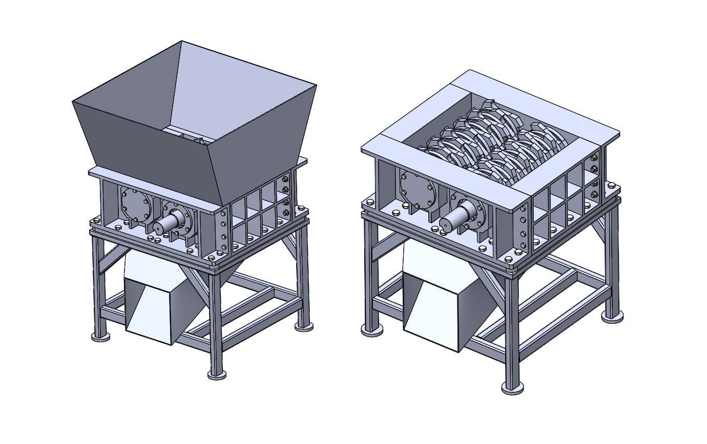

Projects

♻️ Plastic Waste Shredder & Melter
Designed and built a manually operated shredder-melter to convert plastic waste into paver blocks. Includes full CAD modeling, hand calculations, fabrication, and testing.
View Project →
🔍 Real-Time Fraud Detection API
XGBoost model deployed on AWS Lambda that reduced false positives by 65% and saved $32K/month for a FinTech client.
View Project →
📊 Customer Churn Prediction
PySpark pipeline and Random Forest classifier that retained 18% of at-risk customers and recovered $120K in revenue.
View Project →
🏥 HIPAA Document Summarizer
Fine-tuned Mistral-7B deployed inside a VPC that cut clinical document review time from 12 minutes to 90 seconds.
View Project →
🚚 Route Optimization & Tracking
Genetic algorithm for delivery routing that reduced driving distance by 22% and saved $8,400/week.
View Project →
🎓 Personalized Learning Recommender
Hybrid recommendation system in PyTorch that increased session time by 35% and cut churn from 40% to 27%.
View Project →